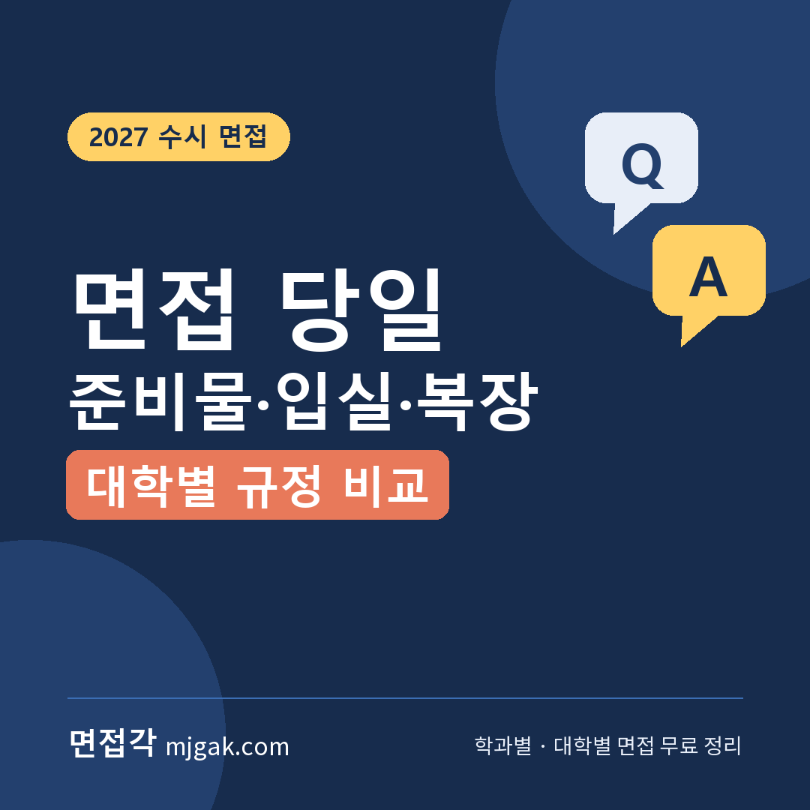
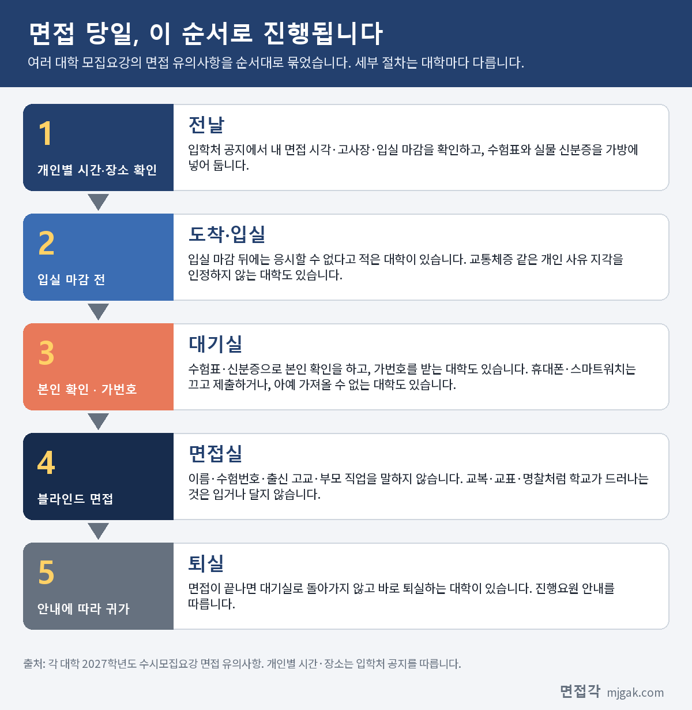
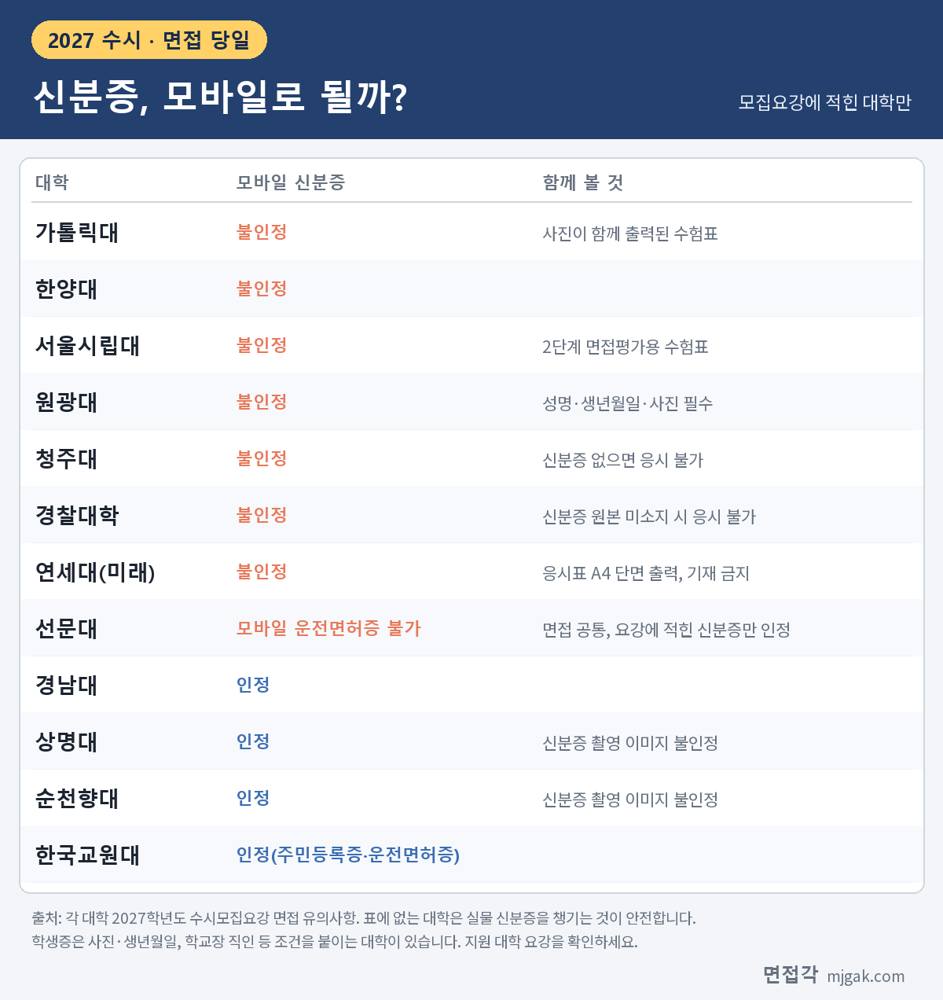
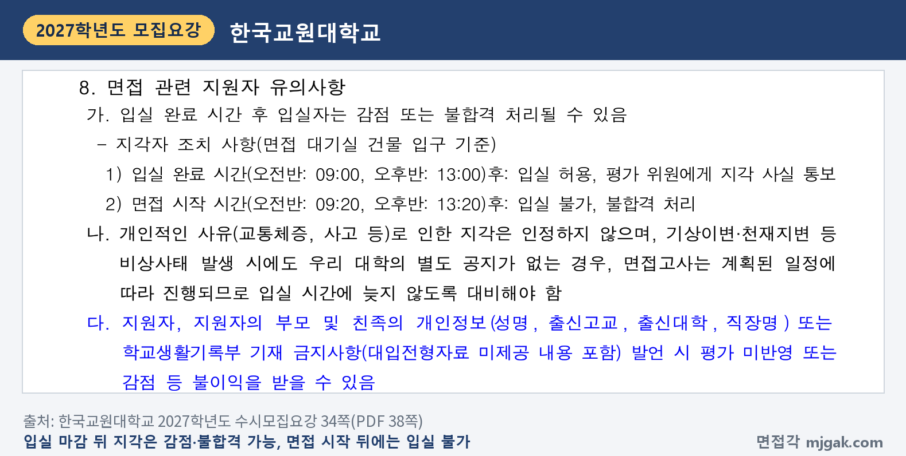
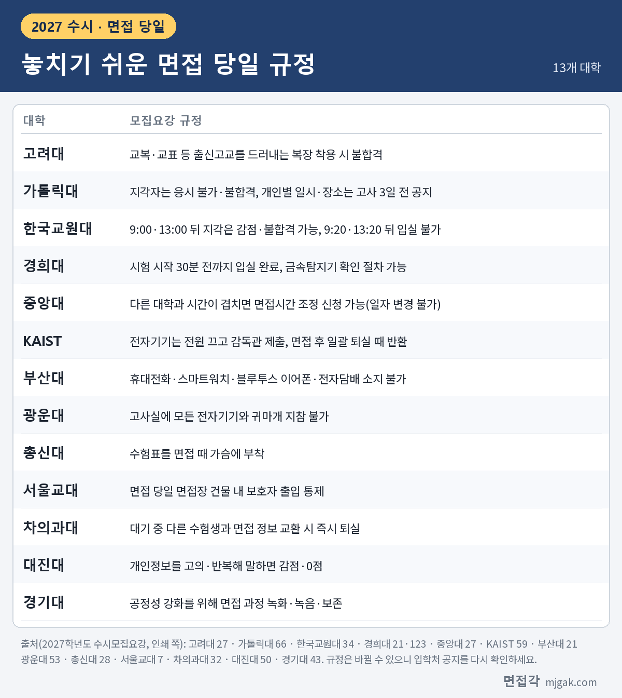
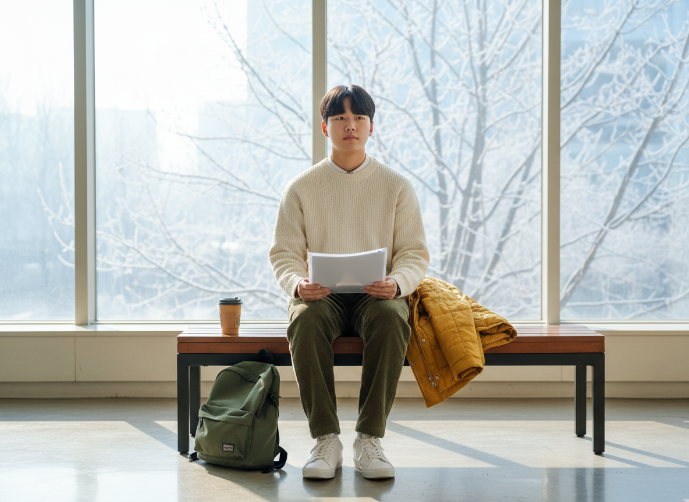

Ctrl+V (서식 유지됨)제목
본문 (이 영역 전체가 복사됩니다)
📷 여기에 이미지 넣기 — 썸네일 — thumb-dayof.png (대표 이미지로 지정)
면접 준비는 답변만이 아닙니다. 면접 날 신분증을 두고 오거나, 입실 마감을 넘기거나, 교복을 입고 가면 답변을 해 보기도 전에 불이익을 받을 수 있습니다. 실제로 지각하면 응시할 수 없다고 적은 대학, 교복을 입으면 불합격이라고 적은 대학이 있습니다. 이 글은 면접각이 2027학년도 모집요강에서 면접 당일 안내를 확인한 97개 대학의 규정을 준비물, 입실 시간, 휴대폰, 복장과 블라인드 순서로 비교했습니다. 대학마다 다른 규정은 대학 이름과 함께 적었습니다. 면접을 앞둔 고3과 재수생, 면접 날 함께 가는 학부모님이 읽으시면 됩니다.
1. 면접 당일, 이 순서로 진행됩니다
📷 여기에 이미지 넣기 — 도식 — dayof-flow.png
대학마다 세부 절차는 다르지만 큰 흐름은 비슷합니다. 대기실에서 수험표와 신분증으로 본인 확인을 하고, 가번호를 받은 뒤 면접실로 이동합니다. 부산대는 대기실 입실, 본인확인·유의사항 숙지, 가번호 순 대기, 고사실, 퇴실 순서로 안내합니다(64쪽). 을지대는 대기실에서 수험표·신분증을 1차로 확인한 뒤 가번호를 주고, 2차 본인 확인 후 입실합니다(17쪽).
2. 준비물: 수험표와 실물 신분증
📷 여기에 이미지 넣기 — 이미지 1 — dayof-table-id.png
가장 기본은 수험표와 신분증입니다. 이름은 대학마다 달라서 한국교원대는 "면접응시표", 연세대(미래)는 "응시표"라고 부릅니다. 출력 방식을 정한 대학도 있습니다. 가톨릭대는 사진이 함께 출력된 수험표(66쪽), 서울교대는 컬러 인쇄 수험표(5쪽)를 요구하고, 총신대는 수험표를 면접 때 가슴에 붙이도록 적당한 크기로 출력하라고 안내합니다(28쪽).
모바일 신분증은 특히 조심해야 합니다. 가톨릭대·한양대·서울시립대·원광대·청주대·경찰대학·연세대(미래)는 모바일 신분증을 인정하지 않는다고 적었습니다. 반대로 경남대·상명대·순천향대·한국교원대는 모바일 신분증을 인정합니다. 다만 상명대와 순천향대는 신분증을 찍은 사진(촬영 이미지)은 인정하지 않습니다. 대학마다 다르니 실물 신분증을 챙기는 것이 가장 안전합니다.
신분증이 없으면 응시할 수 없다고 적은 대학도 있습니다. 청주대, 경희대, 경찰대학이 그렇고, 상명대 서울캠퍼스도 미지참 시 응시 불가입니다. 수험표는 잃어버려도 다시 받을 수 있는 대학이 있습니다. 부산대는 고사장 본부에서 출력해 주고(21쪽), 강원대는 당일 분실 시 재발급할 수 있습니다(18쪽). 국립창원대와 성균관대는 준비물에 필기구를 적었습니다.
3. 입실 시간: 마감 뒤에는 응시 못 할 수도
📷 여기에 이미지 넣기 — 캡처 1 — 한국교원대학교 2027학년도 수시모집요강 34쪽: knue-2027-dayof-late.png
입실 마감을 아주 엄격하게 적은 대학이 있습니다. 한국교원대는 오전반 9시·오후반 1시까지 입실을 마쳐야 합니다. 그 뒤에 들어오면 입실은 되지만 평가위원에게 지각 사실을 알리고, 감점이나 불합격 처리될 수 있습니다. 면접 시작 시각인 오전 9시 20분·오후 1시 20분 뒤에는 입실할 수 없고 불합격입니다. 교통체증이나 사고 같은 개인 사유 지각은 인정하지 않습니다(34쪽). 가톨릭대도 지각자는 응시할 수 없고 불합격이라고 적었습니다(66쪽). 경희대는 시험 시작 30분 전까지 고사실에 입실을 마치라고 안내합니다.
개인별 면접 시각과 고사장은 대학이 따로 공지합니다. 가톨릭대와 광운대는 고사 3일 전에 입학 홈페이지에 올리고, 숙명여대는 11월 24일(화) 17시에 안내합니다. 국립창원대는 고사 당일 9시 30분(오후반 13시)에 예비소집을 합니다. 대중교통 이용을 권하는 대학도 있습니다. 총신대는 가급적 대중교통을 이용하라고 하고, 경희대는 서울캠퍼스에 차량 진입이 어려울 수 있다고 안내합니다.
다른 대학 면접과 시간이 겹칠 때 방법을 적은 곳도 있습니다. 중앙대는 다른 대학과 시간이 겹치면 면접시간 조정을 신청할 수 있습니다. 다만 날짜는 바꿀 수 없습니다(27쪽). 반대로 강원대(오전/오후), 세종대, 한림대처럼 시간 조정·변경이 안 된다고 적은 대학도 있습니다.
4. 휴대폰·전자기기: 끄는 것으로 끝나지 않습니다
휴대폰 규정은 대학마다 다릅니다. 대기실에서 제출하는 대학, 고사장에 아예 가지고 들어갈 수 없는 대학, 사용만 금지하는 대학(경희대·서울교대)이 있습니다. KAIST는 휴대폰·전자시계·노트북·웨어러블 등을 전원을 끄고 감독관에게 제출하며, 면접 뒤 일괄 퇴실할 때 돌려받습니다(59쪽). 숙명여대도 시험 시작 전 감독위원 지시에 따라 보관·제출하고, 따르지 않으면 부정행위자로 퇴실합니다. 순천향대는 반입했으면 대기실에서 진행위원에게 내야 하고, 내지 않으면 부정행위입니다.
휴대폰만이 아닙니다. 부산대는 휴대전화·스마트워치·블루투스 이어폰·전자담배 등 모든 전자기기를 소지할 수 없고, 소지·사용이 확인되면 불합격입니다(21쪽). 광운대는 고사실에 귀마개도 가지고 들어갈 수 없습니다. 경희대는 화장실 이용 때 등 금속탐지기로 확인하는 절차를 거칠 수 있다고 적었습니다. 국립창원대와 청주대는 고사 중 사용이 확인되면 고사가 끝난 뒤라도 불합격입니다. 스마트워치와 무선 이어폰은 집에 두고 가는 것이 가장 간단합니다.
5. 복장과 블라인드: 학교가 드러나지 않게
📷 여기에 이미지 넣기 — 이미지 2 — dayof-table-rules.png
이 글에서 확인한 97개 대학 중 50곳이 교복 착용 금지를 적었습니다. 고려대는 교복·교표 등 출신고교를 드러내는 복장을 입으면 불합격입니다. 교복뿐 아니라 체육복(동국대·광운대), 생활복(경북대·성결대), 명찰·배지(덕성여대·서울여대), 군복 같은 제복(아주대·순천향대·서울과기대·연세대(미래))을 함께 금지한 대학도 있습니다.
입을 옷을 적은 대학은 일부입니다. KAIST와 을지대는 단정한 사복, 전북대는 사복 착용, 경북대는 자유복, 호서대는 복장 자유, 선문대는 교복을 제외한 깔끔하고 단정한 복장, 대진대는 단정한 복장, 신한대는 단정한 복장 권장이라고 적었습니다. 규정이 없는 대학은 교복처럼 학교가 드러나는 옷만 피하면 됩니다.
말에도 블라인드 규정이 있습니다. 이름, 수험번호, 출신 고교를 말하지 말라는 규정과 함께, 부모(친인척)의 이름·직업·직장 언급을 금지하거나 불이익을 준다고 적은 대학이 이 글에서 36곳입니다. 대진대는 이런 정보를 고의로 또는 반복해서 말하면 감점이나 0점 처리합니다(50쪽). 답변 연습을 할 때 "○○고에서는"처럼 학교 이름을 넣는 습관이 있는지 미리 들어 보세요.
6. 그 밖에 알아 둘 것
면접을 녹화·녹음하는 대학이 있습니다. 경기대는 공정성 강화를 위해 면접 평가 과정을 녹화·녹음해 보존하고(43쪽), 명지대는 학생부종합 면접을 녹화·녹음할 수 있다고 적었습니다. 광운대는 학생부종합 일부 모집단위에서 녹화·녹음할 수 있으며, 평가에는 쓰지 않습니다.
대기 시간에도 규정이 있습니다. 차의과대는 대기 중 다른 수험생과 접촉하거나 면접 정보를 주고받으면 즉시 퇴실하고 사정 대상에서 제외합니다(32쪽). 강원대도 대기 중 다른 지원자 접촉, 휴대전화로 문제 유출 등을 부정행위로 보고 사정에서 제외합니다(18쪽). 서울교대는 면접 당일 면접장 건물 안에 보호자 출입을 통제합니다(7쪽). 면접에 응시하지 않으면 불합격(결시·결격) 처리한다고 적은 대학이 이 글에서 58곳이고, 사정 대상에서 제외한다고 적은 대학도 10곳입니다.
📷 여기에 이미지 넣기 — 이미지 3 — 제미나이 생성: 겨울 아침 캠퍼스 건물 복도 벤치에서 투명 파일을 들고 차분히 대기하는 학생(실사) / "제미나이 프롬프트 1" · gem-dayof-1.png
(AI로 만든 이미지로, 실제 캠퍼스와 다를 수 있습니다)
7. 면접 당일 자주 묻는 것들
Q. 교복 대신 정장을 입어야 하나요?
A. 이 글에서 확인한 97개 대학의 면접 당일 안내 중 정장을 요구한 대학은 없었습니다. 복장을 적은 대학은 "단정한 사복"(KAIST·을지대), "사복 착용"(전북대), "자유복"(경북대), "복장 자유"(호서대), "단정한 복장"(선문대·대진대, 신한대는 권장) 정도입니다. 지원 대학 요강에 복장 규정이 따로 있는지 확인하세요.
Q. 모바일 신분증만 있어요.
A. 가톨릭대·한양대·서울시립대·원광대·청주대·경찰대학·연세대(미래)는 모바일 신분증을 인정하지 않습니다. 인정하는 대학도 있지만, 실물 주민등록증이나 여권, 청소년증을 챙기는 것이 가장 안전합니다. 학생증은 사진·생년월일이나 학교장 직인 같은 조건을 붙이는 대학이 있습니다.
Q. 다른 대학 면접과 같은 날이에요.
A. 시간 조정 신청을 받는 대학(중앙대)이 있고, 조정·변경이 안 되는 대학(강원대·세종대·한림대 등)이 있습니다. 두 대학의 개인별 시간 공지를 받으면 바로 비교해 보고, 조정이 가능한 대학에 먼저 문의하세요.
Q. 부모님이 같이 들어갈 수 있나요?
A. 서울교대는 면접장 건물 안에 보호자 출입을 통제합니다. 다른 대학도 보호자가 기다릴 곳이 따로 있는지 입학처 공지를 확인하고, 만날 장소를 미리 정해 두세요.
Q. 수험표를 두고 왔어요.
A. 부산대는 고사장 본부에서 출력해 주고, 강원대는 당일 재발급이 가능합니다. 부산교대와 백석대는 신분증을 가지고 정해진 곳에서 다시 받도록 안내합니다. 신분증은 꼭 있어야 하니 신분증부터 챙기세요.
8. 면접 당일 체크리스트
□ 개인별 면접 시각·고사장·입실 마감을 확인했다
□ 수험표(출력 방식이 정해졌는지 확인)와 실물 신분증을 챙겼다
□ 교복·교표·명찰·체육복 등 학교가 드러나는 것은 입지 않는다
□ 스마트워치·무선 이어폰은 두고 가고, 휴대폰은 제출할 준비를 했다
□ 입실 마감보다 일찍 도착하도록 출발 시각과 교통편을 정했다
□ 답변에서 이름·학교·부모 직업을 말하지 않는 연습을 했다
□ 대기 중에 다른 수험생과 면접 내용을 주고받지 않는다
9. 대학별 면접 글 이어 보기
이 글에 규정을 인용한 대학 중 면접 방식과 예상 질문을 따로 정리한 대학입니다.
▷ 고려대 계열적합전형 면접 총정리 (교복·교표 착용 시 불합격)
▷ 가톨릭대 잠재능력우수자면접전형 면접 총정리 (지각 시 응시 불가, 모바일 신분증 불인정)
▷ 경희대 네오르네상스 면접 총정리 (30분 전 입실, 금속탐지기)
▷ 중앙대 탐구형인재 면접 총정리 (다른 대학과 겹치면 시간 조정 신청)
▷ 부산대 학생부종합전형·지역인재전형 면접 총정리 (전자담배·블루투스 이어폰도 소지 불가)
▷ 광운대 참빛인재 면접 총정리 (귀마개 지참 불가, 일부 녹화)
▷ 차의과대 CHA학생부교과·CHA학생부종합 면접 총정리 (대기 중 정보 교환 금지)
▷ 한양대 학생부종합(면접형) 면접 총정리 (모바일 신분증 불인정)
▷ 서울시립대 학생부종합전형Ⅰ(면접형) 면접 총정리 (모바일 신분증 불인정)
▷ 상명대 상명인재 면접 총정리 (신분증 촬영 이미지 불인정)
▷ 숙명여대 숙명인재 면접 총정리 (전자기기 보관·제출)
▷ 강원대 미래인재면접전형 면접 총정리 (면접시간 조정 불가)
▷ 명지대 명지인재면접전형 면접 총정리 (녹화·녹음 가능)
▷ 경기대 KGU학생부종합전형 면접 총정리 (면접 과정 녹화·녹음)
▷ 대진대 윈윈대진전형 면접 총정리 (개인정보 고의·반복 언급 시 감점·0점)
▷ 총신대 코람데오인재 면접 총정리 (수험표 가슴에 부착)
10. 함께 보면 좋은 글
면접 날 실력을 다 보여 주려면 규정 때문에 흔들리지 않아야 합니다. 전날 밤 준비물과 입실 시각을 한 번 더 확인하세요.
※ 이 글의 규정은 각 대학의 2027학년도 수시모집요강(면접 유의사항, 전형일정, 블라인드 면접 안내)에서 인용했습니다. 괄호 안 쪽수는 각 모집요강에 인쇄된 쪽수입니다. 대학 수 집계는 면접각이 확인한 97개 대학 기준으로 이 글에서 센 값입니다. 규정은 바뀔 수 있고 개인별 시간·장소는 대학이 따로 공지하니, 지원 대학 입학처 공지를 꼭 확인하세요.
면접각 "면접 당일 안내 모아보기"에서 대학 이름을 검색하면 그 대학의 입실·준비물·휴대폰·복장 규정과 출처 쪽수를 바로 볼 수 있습니다. 회원가입 없이 무료입니다.
태그 (#은 에디터가 자동으로 붙이므로 그대로 붙여 넣어도 됩니다)
넣을 이미지 목록 (docs/promo/img 폴더)






제미나이 프롬프트 1 — 겨울 아침 캠퍼스 건물 복도 벤치에서 투명 파일을 들고 차분히 대기하는 학생(실사) (4:3) — 제미나이에 그대로 붙여 넣어 이미지를 만드세요